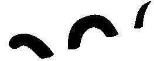
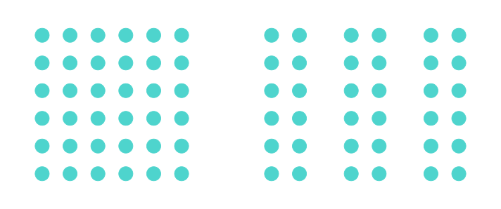

השלימו את המילה החסרה:
כחול לבן ורוד .....
השלימו את המילה החסרה:
כחול
לבן,
ורוד
.....
בשביל להצליח צריך לעבוד קשה
אם אתה לא מוצא דרך להצלחה, תסלול אותה בעצמך
גשטאלט
השלם
גדול מסכום חלקיו

עקרונות הגשטאלט
- המוח מזהה את השלם לפני שהוא מזהה את החלקים
- המוח שלנו ממלא את החסר

- המוח מנסה להימנע מחוסר וודאות
- המוח טוב בזיהוי שוני ודמיון
עקרון הסמיכות
קיימת נטייה לקבץ יחד עצמים סמוכים זה לזה

עקרון ה.....
קיימת נטייה .....
עקרון ה.....
קיימת נטייה .....
עקרון ה.....
קיימת נטייה .....
סרטון של איש גוגל מגניב שמסביר..
קיימת נטייה .....